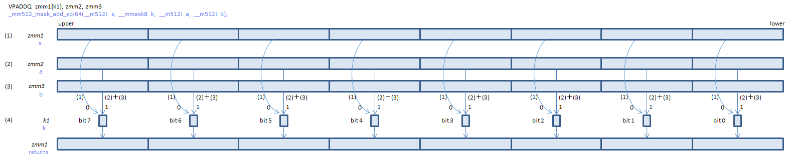
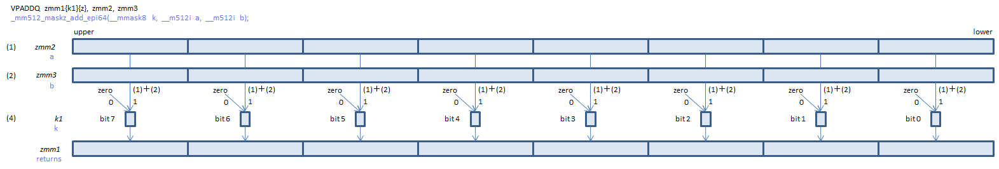

Opmask registers can control each element to be processed or not to be processed.
There are eight 64-bit Opmask registers (K0 to K7). K0 cannot be be specified in { }.
For intrinsics, a value of type __mmask8, __mmask16, __mmask32 or __mmask64 can be used for Opmask.
For each element, if the corresponding mask bit is 0, the value in the destination is left unchanged. (copied from first argument).
Example

If no mask register is specified, all elements are processed.
For each element, if the corresponding mask bit is 0, the element of the destination is zero cleared.
Example

Instructions to handle Opmask registers are listed here.
For 64-bit element instructions, specifying one 64-bit memory operand for m64bcst, like "qword bcst [rcx]", the 64-bit value is broadcasted to every element of the source operand.
For 32-bit element instructions, m32bcst can be specified.
For FP16 instructions, m16bcst can be specified.
For integer 16-bit / 8-bit element instructions, no bcst can be specified.
From register operands, bcst cannot be specified.
Specifying {er} or {sae}, the exception masks and the round control of MXCSR are overridden only while the single instruction is being executed.
Available only for 512-bit instructions with no memory operand.
Specify the round control or sae in the last argument of "_round" instrinsics.
For most FP instructions, {er} can be specified. When {er} is specified, SAE is always applied.
| asm {er} |
intrinsics the last argument |
|
|---|---|---|
| to nearest or even | {rn-sae} | _MM_FROUND_TO_NEAREST_INT |
| toward negative infinity | {rd-sae} | _MM_FROUND_TO_NEG_INF |
| toward positive infinity | {ru-sae} | _MM_FROUND_TO_POS_INF |
| toward zero | {rz-sae} | _MM_FROUND_TO_ZERO |
| (as specified in MXCSR) | specify nothing | _MM_FROUND_CUR_DIRECTION or use intrisic without "_round" |
For no rounding instructions and instruction-specific rounding instructions, {sae} can be specified instead of {er}.
| asm {sae} |
intrinsics the last argument |
|
|---|---|---|
| Suppress All Exceptions | {sae} | _MM_FROUND_NO_EXC |
| (as specified in MXCSR) | specify nothing | _MM_FROUND_CUR_DIRECTION or use intrisic without "_round" |
When SAE is applied, MXCSR flags are not set.